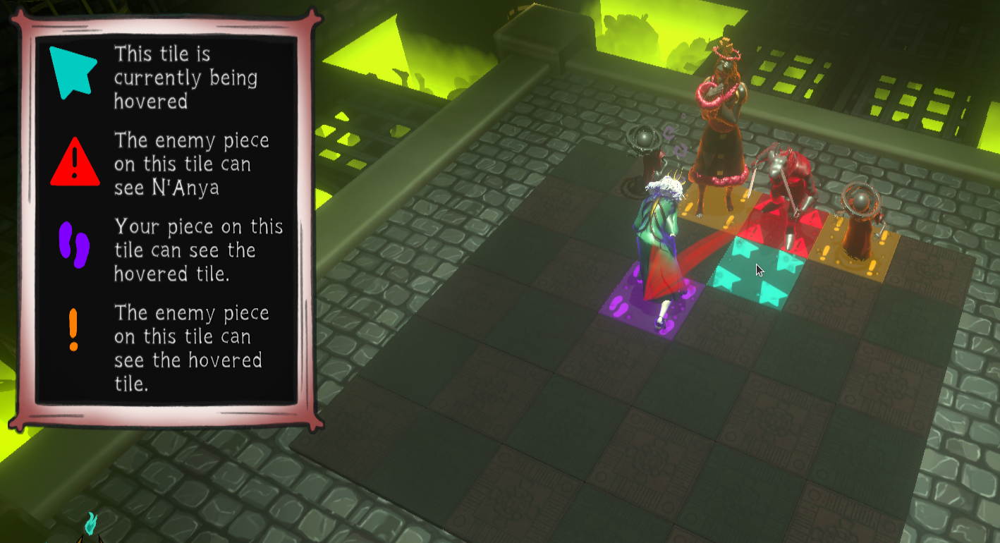
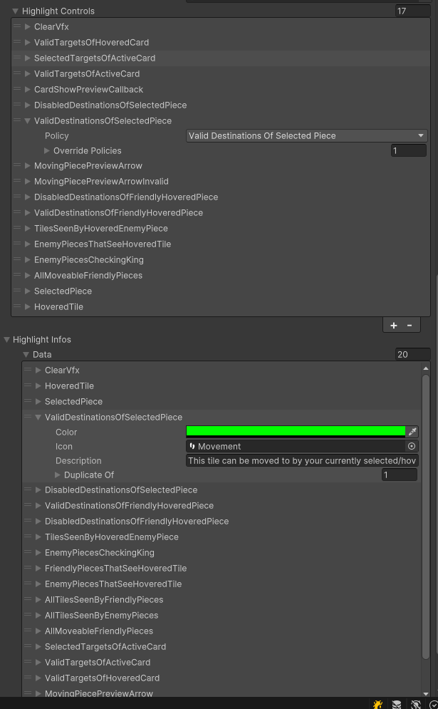

Major Projects
Chessnomancy
I was the Lead Programmer for the development of Chessnomancy, an 18-month-long game project with a peak team size of 16 people, 4 of which were programmers. In addition to managing the programming team and being heavily involved in the systems design of the game, my most significant contribution to Chessnomancy was programming the core systems required to simulate all of the complex interconnected interactions and triggered effects that run in the game.
We plan for Chessnomancy to be released on Steam around the end of March. In the meantime, you can contact me for access to a build of the game.
Minecraft in Minecraft
In 2021 I wrote a software 3D renderer in assembly. Following that, I worked with YouTuber Sammyuri to design and create a custom redstone GPU inside of Minecraft. After the renderering hardware was working, I programmed Sammyuri's redstone CPU and the new GPU to play a custom version of Minecraft. The project took 7 months of effort to complete.
Showcases and Articles
Optimzing Cascading Triggered Events to Run in a Chess-like AI
Improving the Unity Inspector for a Custom Highlighting Tool
During the development of Chessnomancy, one of the things that we experimented with was a fairly complicated system of highlighting tiles in different ways to give the player information. In the end we found that it added too much visual complexity and we decided to massively simplify it, but I think that some of the tech and tools I made for it behind the scenes are still interesting.
Read More

In order to manage all of the different rules that dictate how each tile will end up being highlighted, I created a data-driven system which allows designers to not only control the color, icon, and description of each rule, but also specify the order that rules get applied in, whether a rule can override another rule on both a per-tile and entire-board basis, and provides a way to remove duplicate or overly similar descriptions of rules from the description UI.
The core of this system consists of two arrays: first is a list of 'Highlight Infos' which allowed me and the other designers to easily configure the basic parameters that gets shown to the player. The second list of 'Highlight Controls' is the part that controls which rules get applied, what order thy get applied in, and which rules override other rules.
An issue that was initially present with this approach is that, by default, the Unity editor will label array elements as 'Element 0', 'Element 1', etc. In practice, this meant that the process of tweaking these rules was far more tedious than it needed to be, since there was no easy way to tell which element was the one you wanted to tweak without opening every single one.

This was a fairly small project and not worth the effort of creating a full editor tool for, but I find a solution in the sparsely-documented way that Unity will sometimes label array elements. If the first serialized field in a struct is a string, Unity will use that string as the element label. I was able to exploit this by adding a hidden string to the start of these structs, resolving this usability issue.